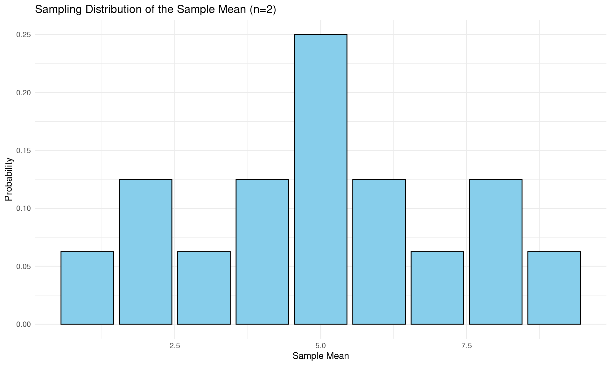
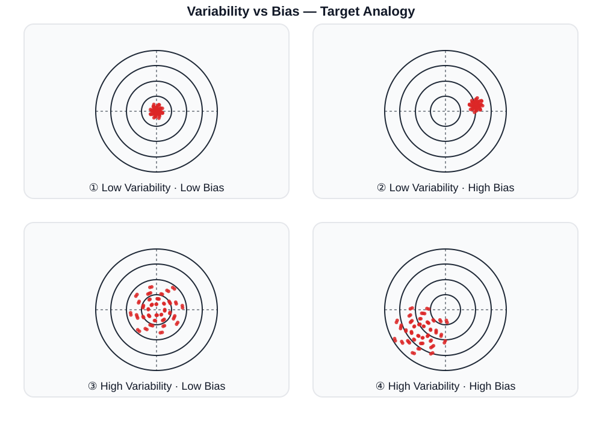
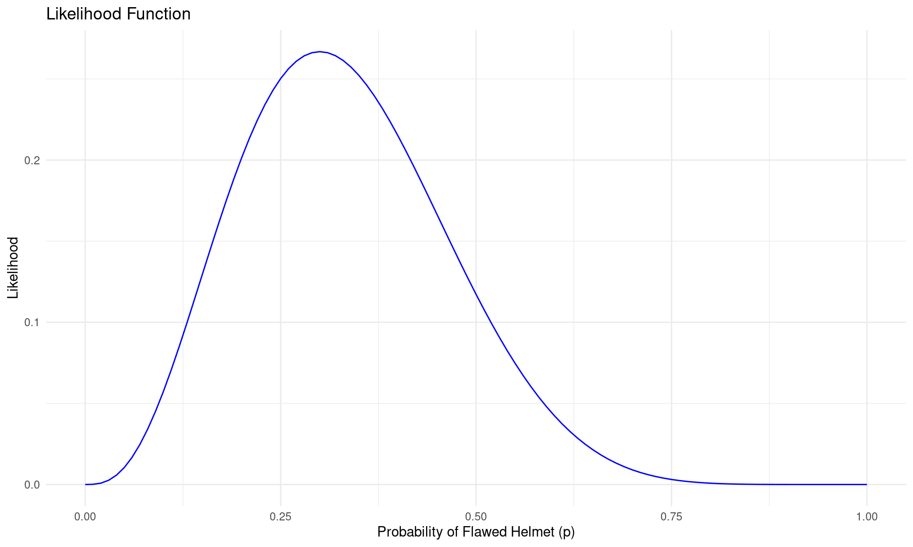
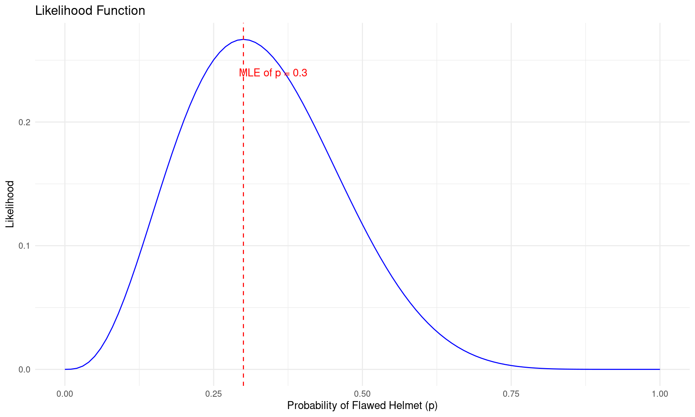
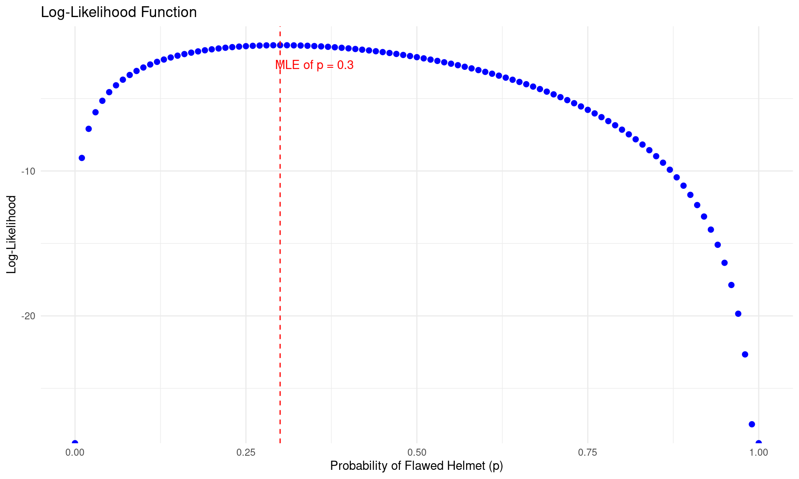

Medical Statistics
Sampling Distribution
Boncho Ku, Ph.D. in Statistics ![]()
Korea Institute of Oriental Medicine (KIOM)
Korea Institute of Oriental Medicine
Sampling Distribution
Introduction
Review
Recall the following terms:
- Population: The entire set of individuals or units about which information is desired in a study
- Parameter: An unknown constant that defines the characteristics or distribution of a population
- (Random) Sample: A collection of observations or measurements obtained from a subset of a population for statistical analysis
- Statistics: A number summarizing a (random) sample taken from the population
Distribution of Statistics?
- Statistics \(\rightarrow\) Random Variable \(\rightarrow\) Probability Distribution
Sampling Distribution: The probability distribution of a given statistic based on a random sample.
Statistics and Sampling Distribution
Definition
Let \(X_1,\ldots,X_n\) be a random sample of size \(n\) from a population with probability distribution \(f(x|\theta)\).
where \(\theta\) is the unknown parameter of the population distribution
\(\rightarrow\) \(X_i\)’s are independent and identically distributed (i.i.d.)
\(\rightarrow\) Simple Random Sample size of \(n\) \(\rightarrow\) \(\text{SRS}(n)\)
Statistic: \(T\) is any value that can be computed from the random sample \(X_1,\ldots,X_n\) \(\rightarrow\) \(T=T(X_1,\ldots, X_n)\) (A function of \(X_1,\ldots, X_n\))
A Statistic \(T(X)\) is a random variable since it is a function of random variables \(X_1,\ldots,X_n\)
Therefore, \(T\) has a probability distribution called the sampling distribution of the statistic \(T\)
Statistics and Sample Distribution
Examples
Sample Mean: \(\bar{X} = \frac{1}{n}\sum_{i=1}^n X_i\) \(\rightarrow \mu\)
Sample Variance: \(S^2 = \frac{1}{n-1}\sum_{i=1}^n (X_i - \bar{X})^2 \rightarrow \sigma^2\)
Sample Proportion: \(\hat{p} = \frac{1}{n}\sum_{i=1}^n I(X_i = \text{success}) \rightarrow p\)
Sample Correlation Coefficient:
\[r_{XY} = \frac{\sum_{i=1}^n (X_i - \bar{X})(Y_i - \bar{Y})}{\sqrt{\sum_{i=1}^n (X_i - \bar{X})^2}\sqrt{\sum_{i=1}^n (Y_i - \bar{Y})^2}} \rightarrow \rho_{XY}\]
Mean Difference: \(\bar{X}_1 - \bar{X}_2\) \(\rightarrow \mu_1 - \mu_2\)
Proportion Difference: \(\hat{p}_1 - \hat{p}_2\) \(\rightarrow p_1 - p_2\)
Sampling Distribution of the Sample Mean
Sampling Distribution of \(\bar{X}\)
- Proposition
-
Let \(X_1, X_2, \ldots, X_n\) be a random sample of size \(n\) from a population with mean \(\mu\) and variance \(\sigma^2\). Then the mean and standard deviation of \(\bar{X}\) are given by the formulas \(\mu_{\bar{X}} = \mu\) and \(\sigma_{\bar{X}} = \sigma^2/n\)
Proof
Mean of \(\bar{X}\)
\[E(\bar{X}) = E\left(\frac{1}{n}\sum_{i=1}^n X_i\right) = \frac{1}{n}\sum_{i=1}^n E(X_i) = \frac{1}{n}\cdot n\mu = \mu\]
Variance of \(\bar{X}\)
\[Var(\bar{X}) = Var\left(\frac{1}{n}\sum_{i=1}^n X_i\right) = \frac{1}{n^2}\sum_{i=1}^n Var(X_i) = \frac{1}{n^2}\cdot n\sigma^2 = \frac{\sigma^2}{n}\]
Sampling Distribution of the Sample Mean
Example
Suppose we have a population with only 4 persons. The heights (in cm) of these persons are 148, 156, 176, and 184.
| \(\text{Height}: x\) | 148 | 156 | 176 | 184 |
|---|---|---|---|---|
| \(f(x)=P(X=x)\) | 1/4 | 1/4 | 1/4 | 1/4 |
We want to find the sampling distribution of the sample mean \(\bar{X}\) for samples of size \(n=2\) drawn from this population with replacement.
\[\begin{align} \mu &= E(X) = \sum x \cdot f(x) \\ &= 148\cdot \frac{1}{4} + 156\cdot \frac{1}{4} + 176\cdot \frac{1}{4} + 184\cdot \frac{1}{4} = 166 \end{align}\]
\[\begin{align} \sigma^2 &= Var(X) = E[X^2] - (E[X])^2 \\ &= 148^2\cdot \frac{1}{4} + 156^2\cdot \frac{1}{4} + 176^2\cdot \frac{1}{4} + 184^2\cdot \frac{1}{4} - 166^2 = 212 \end{align}\]
Sampling Distribution of the Sample Mean
Example (cont.)
| Sample | \(\bar{X}\) | \(P(\text{Sample})\) |
|---|---|---|
| (148,156) | 152 | 1/16 |
| (148,176) | 162 | 1/16 |
| (148,184) | 166 | 1/16 |
| (156,148) | 152 | 1/16 |
| (156,176) | 166 | 1/16 |
| (156,184) | 170 | 1/16 |
| (176,148) | 162 | 1/16 |
| (176,156) | 166 | 1/16 |
| Sample | \(\bar{X}\) | \(P(\text{Sample})\) |
|---|---|---|
| (176,184) | 180 | 1/16 |
| (184,148) | 166 | 1/16 |
| (184,156) | 170 | 1/16 |
| (184,176) | 180 | 1/16 |
| (148,148) | 148 | 1/16 |
| (156,156) | 156 | 1/16 |
| (176,176) | 176 | 1/16 |
| (184,184) | 184 | 1/16 |
| \(\bar{X}\) | 148 | 152 | 156 | 162 | 166 | 170 | 176 | 180 | 184 |
|---|---|---|---|---|---|---|---|---|---|
| \(f(\bar{X})\) | 1/16 | 2/16 | 1/16 | 2/16 | 4/16 | 2/16 | 1/16 | 2/16 | 1/16 |
\[\begin{align} \mu_{\bar{X}} &= \sum \bar{x} \cdot f(\bar{x}) = 166 = \mu \\ \sigma^2_{\bar{X}} &= \sum \bar{x}^2 \cdot f(\bar{x}) - (\mu_{\bar{X}})^2 = 106 = \frac{212}{2} = \frac{\sigma^2}{n} \end{align}\]
Sampling Distribution of the Sample Mean
Properties
Mean: \(E(\bar{X}) = \mu\) (Unbiased Estimator)
Variance: \(Var(\bar{X}) = \frac{\sigma^2}{n}\)
\(\sqrt{Var(\bar{X})} = \sigma/n \rightarrow\) Standard Error (SE) of \(\bar{X}\)
- Measures the variability of the sample mean \(\bar{X}\)
- Decreases with increasing sample size \(n\)
Shape: If the population distribution is normal, then the sampling distribution of \(\bar{X}\) is also normal for any sample size \(n\).
Let \(X_1, \ldots, X_n\) be a random sample from \(N(\mu, \sigma^2)\), then the sample mean \(\bar{X} \sim N\left(\mu, \sigma^{2}/n\right)\)
- If the population distribution is not normal, the sampling distribution of \(\bar{X}\) approaches normality as \(n\) increases \(\rightarrow\) Central Limit Theorem
Central Limit Theorem
Theorem
Let \(X_1, \ldots, X_n\) be a random sample from any population with mean \(\mu\) and variance \(\sigma^2\). Then the sampling distribution of
\[Z = \frac{\bar{X} - \mu}{\sigma/\sqrt{n}}\]
approaches the standard normal distribution \(N(0,1)\) as the sample size \(n \rightarrow \infty\)
Remarks of CLT
Fundamental theorem in statistics that allows us to make inferences about population parameters using sample statistics, even when the population distribution is unknown or non-normal.
Justifying the use of normal distribution-based methods (e.g., confidence intervals, hypothesis tests) for large samples, regardless of the population distribution.
Central Limit Theorem
Binomial Distribution
Let \(X\) be a binomial random variable with parameters \(n\) and \(\theta\), i.e., \(X \sim \text{Binomial}(n, \theta)\)
The mean and variance of \(X\) are given by \(\mu = n\theta\) and \(\sigma^2 = n\theta(1-\theta)\), respectively.
As the sample size \(n\) increases, the distribution of \(\bar{X}\) approaches a normal distribution with mean \(\mu\) and variance \(\sigma^2\), i.e.,
\[\bar{X}_N \stackrel{d}{\rightarrow} \mathcal{N}(\mu, \frac{\sigma^2_X}{N}) = \mathcal{N}(n\theta, \frac{n\theta(1-\theta)}{N})\]
\(X \sim \text{Binomial}(n=1, \theta=0.25)\) , repeated 300 times with sample size \(N={1,\ldots, 50}\)
Central Limit Theorem
Poisson Distribution
Let \(X\) be a Poisson random variable with parameter \(\lambda\), i.e., \(X \sim \text{Poisson}(\lambda)\)
The mean and variance of \(X\) are both equal to \(\lambda\).
As the sample size \(n\) increases, the distribution of \(\bar{X}\) approaches a normal distribution with mean \(\mu\) and variance \(\sigma^2\), i.e.,
\[\bar{X}_N \stackrel{d}{\rightarrow} \mathcal{N}(\mu, \frac{\sigma^2_X}{N}) = \mathcal{N}(\lambda, \frac{\lambda}{N})\]
\(X \sim \text{Poisson}(\lambda=3)\) , repeated 300 times with sample size \(N={1,\ldots, 50}\)
Central Limit Theorem
Uniform Distribution
Let \(X\) be a uniform random variable on the interval \([a,b]\), i.e., \(X \sim \text{Uniform}(a,b)\)
The mean and variance of \(X\) are given by \(\mu = \frac{a+b}{2}\) and \(\sigma^2 = \frac{(b-a)^2}{12}\), respectively.
As the sample size \(n\) increases, the distribution of \(\bar{X}\) approaches a normal distribution with mean \(\mu\) and variance \(\sigma^2\), i.e.,
\[\bar{X}_N \stackrel{d}{\rightarrow} \mathcal{N}(\mu, \frac{\sigma^2_X}{N}) = \mathcal{N}(\frac{a+b}{2}, \frac{(b-a)^2}{12N})\]
\(X \sim \text{Uniform}(a=0, b=1)\) , repeated 300 times with sample size \(N={1,\ldots, 50}\)
Central Limit Theorem
\(\chi^2\) Distribution
Let \(X\) be a chi-square random variable with \(\nu\) degrees of freedom, i.e., \(X \sim \chi^2(k)\)
The mean and variance of \(X\) are given by \(\mu = \nu\) and \(\sigma^2 = 2\nu\), respectively.
As the sample size \(n\) increases, the distribution of \(\bar{X}\) approaches a normal distribution with mean \(\mu\) and variance \(\sigma^2\), i.e.,
\[\bar{X}_N \stackrel{d}{\rightarrow} \mathcal{N}(\mu, \frac{\sigma^2_X}{N}) = \mathcal{N}(\nu, \frac{2\nu}{N})\]
\(X \sim \chi^2(\nu=3)\) , repeated 300 times with sample size \(N={1,\ldots, 50}\)
Estimation
Introduction
Statistical Inference
Data from a any polulation governed by a Probability Distribution
Any probability distribution determined by a small number of Parameters
From the given data, procedures to identify or estimate the parameters \(\rightarrow\) Estmation
Two Types of Estimation
Point Estimation
- Direct toward conclusions about one or one more parameters
- \(\theta\): the parameter of interest
- Objective: estimate \(\theta\)
Interval Estimation
Find a random interval containing the parameter \(\theta\) with probability \((1-\alpha)\) using the estimated errors
Objective: estimate an interval that contains \(\theta\) with a certain level of confidence (e.g., 95% confidence interval)
Point Estimation
General Concepts
A point estimate of a population parameter is a single value that serves as an estimate of that parameter based on sample data.
Unknown parameters are denoted as \(\theta\) (e.g., population mean \(\mu\), population variance \(\sigma^2\), population proportion \(p\))
A point estimate is obtained by applying a statistical function (estimator) to the sample data.
Parameter (\(\theta\)) Estimator Estimates Mean (\(\mu\)) \[\bar{X}=\frac{1}{n}\sum_{i=1}^{N} X_i\] \[\frac{1}{100}\sum_{i=1}^{100} x_i = 36\] Variance (\(\sigma^2\)) \[S^2=\frac{1}{n-1}\sum_{i=1}^{N}(X_i-\bar{X})^2\] \[\frac{1}{100-1}\sum_{i=1}^{100}(x_i-36)^2 = 64\] Proportion (\(p\)) \[\hat{p}=\frac{X}{n}\] \[\hat{p}=\frac{200}{2000} = 0.1\]
Different Samples \(\rightarrow\) Different Estimates with Same Estimator
Point Estimation
How to Assess the Quality of Point Estimators?
Sampling Error
Difference between the point estimator \(\hat{\theta}\) and the true parameter value \(\theta\)
\[ \text{sampling error} = \hat{\theta} - \theta \]
Our best hope is that the sampling error is small enough to make \(\hat{\theta}\) a good approximation of \(\theta\).
To assess the quality of point estimators, we need the distribution of these arrors over all samples
Measure of Quality
- Mean Squared Error (MSE): \(\text{MSE} = E\left [(\theta -\hat{\theta})^2 \right]\)
- Small MSE \(\rightarrow\) Good Estimator
- MSE can be decomposed into Bias and Variance (variabilty) components:
\[\text{MSE} = \text{Bias}^2(\hat{\theta}) + Var(\hat{\theta})\] where \(\text{Bias}(\hat{\theta}) = E(\hat{\theta}) - \theta\), \(Var(\hat{\theta}) = E[(\hat{\theta} - E(\hat{\theta}))^2]\)
Standard error: \(\sigma_{\hat\theta} = \sqrt{Var(\hat\theta)}\)
Point Estimation
Bias and Variance (Variability)
Good Estimator
An estimator is considered good if it has both low bias and low variance.
Unbiasedness: \(E(\hat{\theta}) = \theta\)
Low Variance: \(Var(\hat{\theta}) \rightarrow 0\)
Unfortunately, there is often a trade-off between bias and variance

Point Estimation
How to obtain the Point Estimator?
Maximum Likelihood Estimation (MLE)
A method of estimating the parameters of a statistical model by maximizing the likelihood function, which measures how likely it is to observe the given sample data for different parameter values.
Note
First introduced by Ronald A. Fisher in the 1920s.
Widely used methods for parameter estimation in statistics due to its desirable properties, such as consistency, efficiency, and asymptotic normality.
Point Estimation
Maximum Likelihood Estimation (MLE)
Intuitive Example
Suppose we have three bias coins A, B, and C
\(P(\text{Head}|A) = 0.8\)
\(P(\text{Head}|B) = 0.4\)
\(P(\text{Head}|C) = 0.3\)
We randomly select one coin and toss it 100 times, resulting in the following outcomes:
| Outcome | H | T |
|---|---|---|
| Count | 70 | 30 |
Which coin is most likely to have produced this outcome?
Point Estimation
Maximum Likelihood Estimation (MLE)
Example 1
A sample of ten independent bike helmets just made in the factory A was up for testing. 3 helmets are flawed.
| Helmet | 1 | 2 | 3 | 4 | 5 | 6 | 7 | 8 | 9 | 10 |
|---|---|---|---|---|---|---|---|---|---|---|
| Status | F | N | F | N | N | N | F | N | N | N |
\[p = P(\text{Flawed Helmet}) = \binom{10}{3}p^3(1-p)^7\]
The likelihood function is given by
\[\mathcal{L}(p|x_1,\ldots,x_{10}) = \binom{10}{3}p^3(1-p)^7\]
\(\rightarrow\) The function of the parameter \(p\)
Point Estimation
Maximum Likelihood Estimation (MLE)
Example 1 (cont.)
p_values <- seq(0, 1, by = 0.01)
likelihood_values <- function(p_value) {
choose(10, 3) * (p_value^3) * ((1 - p_value)^7)
}
likelihood_df <- data.frame(p = p_values, Likelihood = likelihood_values(p_values))
# Plotting the Likelihood Function
library(ggplot2)
gp1 <-
ggplot(likelihood_df, aes(x = p, y = Likelihood)) +
geom_line(color = "blue") +
labs(title = "Likelihood Function",
x = "Probability of Flawed Helmet (p)",
y = "Likelihood") +
theme_minimal()


Point Estimation
Maximum Likelihood Estimation (MLE)
Definition
Let \(X_1,\ldots,X_n\) be i.i.d random sample with pdf (or pmf) \(f(x|\theta)\), where \(\theta\) is the unknown parameter of the population distribution.
The likelihood function is defined as
\[\mathcal{L}(\theta|x_1,\ldots,x_n) = \prod_{i=1}^{n} f(x_i|\theta)\]
The MLE of \(\theta\) is the value that maximizes the likelihood function:
\[\hat{\theta}_{MLE} = \arg\max_{\theta} \mathcal{L}(\theta|x_1,\ldots,x_n)\]
Products are often converted to sums by taking the logarithm of the likelihood function, called the log-likelihood function:
\[\ell(\theta|x_1,\ldots,x_n) = \log \mathcal{L}(\theta|x_1,\ldots,x_n) = \sum_{i=1}^{n} \log f(x_i|\theta)\]
Point Estimation
Maximum Likelihood Estimation (MLE)
Example 2
Let \(X_1, X_2, \ldots, X_n\) be a random sample from a normal distribution \(N(\mu, \sigma^2)\), where both \(\mu\) and \(\sigma^2\) are unknown. Find the MLEs of \(\mu\).
Solution:
The likelihood function is given by
\[\mathcal{L}(\mu, \sigma^2|x_1,\ldots,x_n) = \prod_{i=1}^{n} \frac{1}{\sqrt{2\pi\sigma^2}} \exp\left(-\frac{(x_i - \mu)^2}{2\sigma^2}\right) \]
The log-likelihood function is given by
\[\ell(\mu, \sigma^2|x_1,\ldots,x_n) = -\frac{n}{2}\log(2\pi\sigma^2) - \frac{1}{2\sigma^2}\sum_{i=1}^{n}(x_i - \mu)^2\]
Taking the partial derivative with respect to \(\mu\) and setting it to zero:
\[\frac{\partial \ell}{\partial \mu} = \frac{1}{\sigma^2}\sum_{i=1}^{n}(x_i - \mu) = 0\]
\[\therefore \hat{\mu}_{MLE} = \bar{X} = \frac{1}{n}\sum_{i=1}^{n} X_i\]